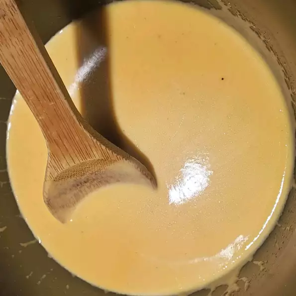

Cheese Sauce for Broccoli and Cauliflower

Description
The basic white sauce that your mother probably taught
you, with cheese thrown in for yumminess.
Definitely helps to convinces kids to eat their vegetables!
Ingredients
- 2 tablespoons butter
- 2 tablespoons all-purpose flour
- 1 cup milk
- 1½ cups shredded Cheddar cheese
- 1 pinch salt and ground black pepper to taste
Steps
- Melt butter in a saucepan over medium heat; whisk flour into butter until smooth.
Pour milk into butter mixture and stir with a wooden spoon to combine.
- Cook and stir until mixture thickens, about 3 minutes.
- Add Cheddar cheese and stir until cheese is melted, about 3 minutes more.
Season with salt and pepper.
Back to Homepage